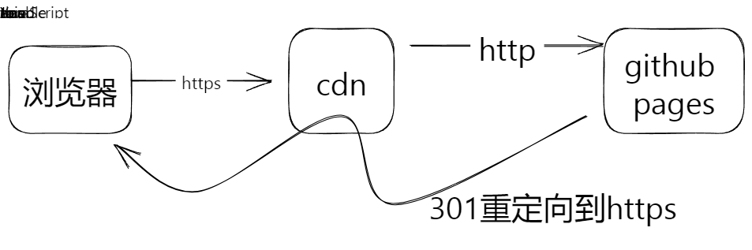
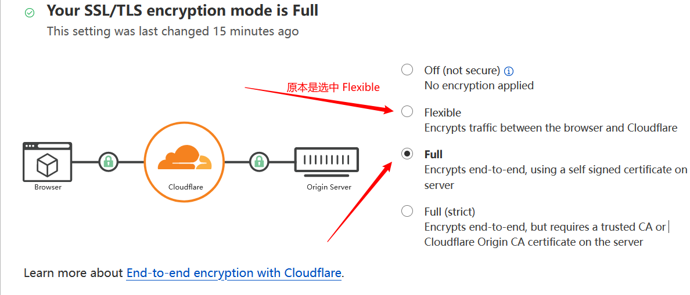

2023-10-10
使用 github pages 部署
OceanPress_js
生成的站点
1.
将 OceanPress 生成的产物上传到 github 仓库
2.
开启 pages
3.
（可选）设置自定义域名
4.
（可选）配置 cdn
1.
以 cloudflare 为例，直接配置 dns 指向
用户名.github.io
2.
我遇到的问题
配置完后无法访问，显示重定向异常，经检索后得知是 cdn 回源策略的问题， 当github pages 开启了https的时候如果 cloudflare的回源策略是 Flexible 那么就会一直处于如下循环，浏览器不管发送什么请求，cdn都会转换成 http 请求去访问pages服务 pages就一直返回重定向要求访问https，但浏览器发出的请求已经是https的了，所以乍一看让人摸不清头脑

解决方案就是要么关闭 pages 的https，要么修改cdn的回源策略，这里我选择修改cdn
